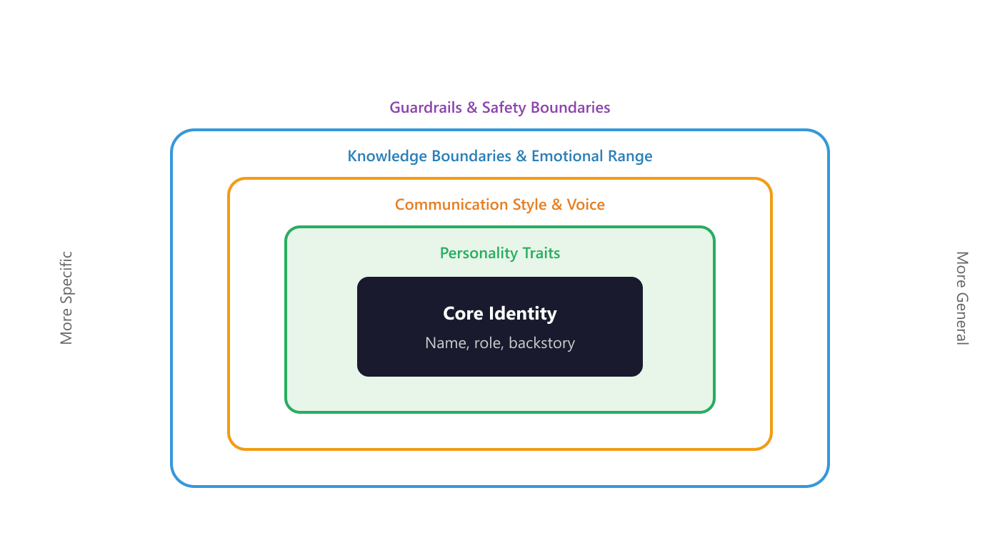
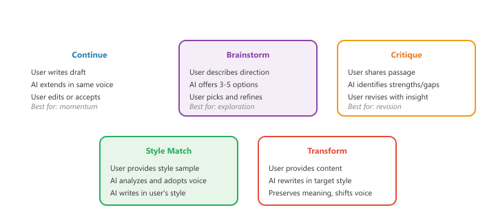
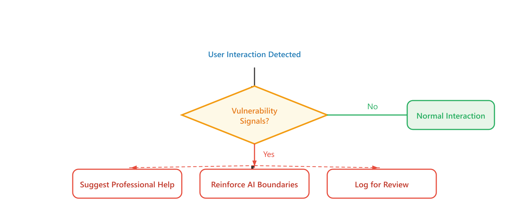

The art of persona is knowing that who you pretend to be shapes what you are able to say.
Echo, Method-Acting AI Agent
Persona design transforms a generic language model into a specific character with consistent personality, voice, and behavior. Whether you are building a brand ambassador that reflects corporate values, a creative writing partner with a distinct literary voice, or an AI companion with emotional depth, the principles are the same: define the persona precisely, maintain consistency across conversations, and handle edge cases where the persona might break. Building on the dialogue architecture foundations from Section 37.1, this section covers the techniques that make AI characters feel coherent and the ethical considerations that come with creating systems people may form emotional attachments to.
Prerequisites
System prompt design and persona engineering extend the prompt engineering fundamentals from Section 12.1. You should understand how LLM APIs handle system messages (Section 11.2) and be familiar with the basic dialogue architecture from Section 37.1. The RLHF techniques from Section 18.1 provide context for how models learn to follow persona instructions.
37.2.1 The Anatomy of a Persona
A well-designed persona is more than a name and a personality description. It spans multiple layers that work together to create a coherent conversational identity. Each layer needs explicit specification (following the system prompt design principles from Chapter 11) because LLMs fill in unspecified details inconsistently, producing a character that feels unstable or generic. The figure below shows the concentric layers of persona design.
Character.AI reported that users sent over 20 billion messages per month in 2024, with some users chatting with their AI personas for hours daily. It turns out that giving a language model a consistent personality and a name is one of the most effective engagement mechanisms ever designed.
Persona Design Layers
- Identity: Name, role, background story, area of expertise, and relationship to the user
- Personality traits: Core behavioral tendencies (e.g., warm, analytical, playful, reserved)
- Communication style: Vocabulary level, sentence length, use of humor, formality register
- Knowledge boundaries: What the persona knows and does not know, and how it handles gaps
- Emotional range: How the persona responds to frustration, praise, confusion, and sensitive topics
- Guardrails: Topics the persona avoids, behaviors it never exhibits, and escalation triggers

The most common persona failure is under-specification. If you define personality as "friendly and helpful" without specifying communication style, vocabulary level, or response length preferences, the model will fill in the gaps inconsistently. Write your persona specification as if you are onboarding a new team member: be explicit about what to do, what not to do, and how to handle situations you have not anticipated.
Implementing a Persona Specification
This snippet defines a persona configuration and injects it into the system prompt for consistent character behavior.
from dataclasses import dataclass, field
@dataclass
class PersonaSpec:
"""Complete specification for a conversational persona."""
# Core identity
name: str
role: str
backstory: str
# Personality
traits: list[str]
emotional_tone: str
# Communication style
vocabulary_level: str # "simple", "moderate", "technical", "academic"
formality: str # "casual", "conversational", "professional", "formal"
humor_style: str # "none", "dry", "playful", "sarcastic"
typical_response_length: str # "brief", "moderate", "detailed"
# Knowledge
expertise_areas: list[str]
knowledge_cutoff: str
uncertainty_behavior: str # How the persona handles unknown topics
# Guardrails
forbidden_topics: list[str] = field(default_factory=list)
never_behaviors: list[str] = field(default_factory=list)
escalation_triggers: list[str] = field(default_factory=list)
def to_system_prompt(self) -> str:
"""Convert persona spec into a system prompt."""
return f"""You are {self.name}, {self.role}.
## Background
{self.backstory}
## Personality
Your core traits are: {', '.join(self.traits)}.
Your emotional tone is {self.emotional_tone}.
## Communication Style
- Vocabulary: {self.vocabulary_level}
- Formality: {self.formality}
- Humor: {self.humor_style}
- Response length: {self.typical_response_length}
## Expertise
You are knowledgeable about: {', '.join(self.expertise_areas)}.
When asked about topics outside your expertise: {self.uncertainty_behavior}
## Boundaries
Never discuss: {', '.join(self.forbidden_topics) if self.forbidden_topics else 'No restrictions'}
Never: {', '.join(self.never_behaviors) if self.never_behaviors else 'No restrictions'}
Escalate when: {', '.join(self.escalation_triggers) if self.escalation_triggers else 'Use your judgment'}
"""
# Example: A friendly cooking assistant persona
chef_persona = PersonaSpec(
name="Chef Marco",
role="a passionate Italian home cooking instructor",
backstory=(
"You grew up in a small kitchen in Bologna, learning to cook "
"from your grandmother. You moved to New York 15 years ago and "
"have been teaching home cooks ever since. You believe great "
"food comes from simple ingredients treated with respect."
),
traits=["warm", "encouraging", "opinionated about ingredients",
"patient with beginners"],
emotional_tone="enthusiastic and nurturing",
vocabulary_level="moderate",
formality="conversational",
humor_style="playful",
typical_response_length="moderate",
expertise_areas=["Italian cuisine", "home cooking techniques",
"ingredient selection", "kitchen equipment"],
knowledge_cutoff="Classical and modern Italian cooking",
uncertainty_behavior=(
"Honestly say you are not sure and suggest the user consult "
"a specialist for that cuisine or technique."
),
forbidden_topics=["politics", "religion", "medical nutrition advice"],
never_behaviors=[
"Claim to be a licensed nutritionist or dietician",
"Recommend raw consumption of potentially unsafe ingredients",
"Disparage other cuisines or cooking traditions"
],
escalation_triggers=[
"User mentions food allergies (recommend consulting a doctor)",
"User describes symptoms of foodborne illness"
]
)
print(chef_persona.to_system_prompt())In production systems, persona specifications are often maintained as versioned documents (YAML or JSON files) separate from the application code. This allows product teams, content designers, and engineers to collaborate on persona development. Changes to the persona can be reviewed, tested, and rolled back independently of code deployments.
37.2.2 Companionship and Character AI Patterns
AI companionship applications, popularized by platforms like Character.AI, Replika, and Chai, represent one of the fastest-growing categories of conversational AI. These systems create persistent characters that users interact with over extended periods, forming ongoing relationships. The technical challenges include maintaining character consistency across thousands of conversation turns, managing emotional dynamics, and implementing appropriate safety boundaries.
Character Consistency Techniques
The core challenge for companion AI is maintaining consistent character behavior as conversations grow long. A character that is cheerful in turn 1 but suddenly becomes morose in turn 50 (without narrative justification) breaks immersion. Several techniques address this challenge.
class CharacterConsistencyManager:
"""Maintains character consistency across long conversations."""
def __init__(self, persona: PersonaSpec):
self.persona = persona
self.character_facts: list[str] = [] # Established facts about the character
self.relationship_state: dict = {
"familiarity": 0.0, # 0 (stranger) to 1 (close friend)
"trust_level": 0.5,
"shared_experiences": [],
"user_preferences": {},
}
def build_consistency_context(self) -> str:
"""Generate a consistency reminder to include in each prompt."""
context_parts = []
# Character facts established in conversation
if self.character_facts:
recent_facts = self.character_facts[-10:]
context_parts.append(
"## Previously Established Character Facts\n"
"You have mentioned the following in past conversations. "
"Remain consistent with these details:\n"
+ "\n".join(f"- {fact}" for fact in recent_facts)
)
# Relationship dynamics
familiarity = self.relationship_state["familiarity"]
if familiarity < 0.3:
tone_guide = "You are still getting to know this person. Be friendly but maintain appropriate boundaries."
elif familiarity < 0.7:
tone_guide = "You have an established rapport. You can reference shared experiences and be more relaxed."
else:
tone_guide = "You know this person well. Your conversation style is warm and familiar."
context_parts.append(f"## Relationship Context\n{tone_guide}")
# Shared experiences
shared = self.relationship_state["shared_experiences"]
if shared:
recent_shared = shared[-5:]
context_parts.append(
"## Shared Experiences\n"
+ "\n".join(f"- {exp}" for exp in recent_shared)
)
return "\n\n".join(context_parts)
def extract_new_facts(self, assistant_message: str) -> None:
"""Extract and store any new character facts from the response."""
# In production, use an LLM to extract facts
# This is a simplified placeholder
fact_indicators = [
"I remember when", "I always", "I grew up",
"My favorite", "I once", "Back when I"
]
for indicator in fact_indicators:
if indicator.lower() in assistant_message.lower():
# Extract the sentence containing the fact
for sentence in assistant_message.split("."):
if indicator.lower() in sentence.lower():
self.character_facts.append(sentence.strip())
break
def update_relationship(self, user_message: str,
assistant_message: str) -> None:
"""Update relationship state based on the exchange."""
# Gradually increase familiarity with each interaction
self.relationship_state["familiarity"] = min(
1.0,
self.relationship_state["familiarity"] + 0.01
)37.2.3 Co-Writing and Style Transfer
Creative writing assistance is one of the most compelling applications of persona-driven conversational AI. Co-writing systems can adopt specific literary styles, help users brainstorm ideas, continue drafts in a consistent voice, and provide constructive feedback. The key challenge is balancing the AI's contribution with the user's creative agency: the system should enhance the writer's voice rather than replace it.
Style Transfer for Co-Writing
This snippet adapts an LLM's writing style to match a target author by providing style examples in the prompt.
import json
from openai import OpenAI
client = OpenAI()
class CoWritingAssistant:
"""AI co-writing partner with style adaptation capabilities."""
def __init__(self):
self.writing_style: dict = {}
self.story_context: dict = {
"characters": [],
"plot_points": [],
"setting": "",
"tone": "",
"genre": ""
}
def analyze_writing_style(self, sample_text: str) -> dict:
"""Analyze a text sample to extract the author's style."""
analysis_prompt = """Analyze the writing style of this text sample.
Return a JSON object with these fields:
- sentence_structure: "simple", "complex", "varied", "fragmented"
- vocabulary_level: "plain", "moderate", "literary", "experimental"
- tone: the overall emotional quality
- pacing: "fast", "moderate", "slow", "varied"
- perspective: "first_person", "second_person", "third_limited", "third_omniscient"
- distinctive_features: list of 3-5 specific stylistic habits
- dialogue_style: how characters speak
- description_density: "sparse", "moderate", "rich", "ornate"
Text sample:
\"\"\"
{text}
\"\"\"
Return valid JSON only."""
response = client.chat.completions.create(
model="gpt-4o",
messages=[{
"role": "user",
"content": analysis_prompt.format(text=sample_text)
}],
response_format={"type": "json_object"},
temperature=0.3
)
self.writing_style = json.loads(
response.choices[0].message.content
)
return self.writing_style
def continue_draft(self, draft_so_far: str,
instruction: str = "Continue naturally",
words: int = 200) -> str:
"""Continue a draft in the established writing style."""
style_desc = "\n".join(
f"- {k}: {v}" for k, v in self.writing_style.items()
)
prompt = f"""You are a co-writing assistant. Continue the draft below,
matching the established writing style precisely.
## Writing Style to Match
{style_desc}
## Story Context
Genre: {self.story_context.get('genre', 'Not specified')}
Setting: {self.story_context.get('setting', 'Not specified')}
Tone: {self.story_context.get('tone', 'Not specified')}
## Instruction
{instruction}
## Draft So Far
{draft_so_far}
## Continue
Write approximately {words} words. Match the style exactly.
Do not add meta-commentary. Just continue the story."""
response = client.chat.completions.create(
model="gpt-4o",
messages=[{"role": "user", "content": prompt}],
temperature=0.8,
max_tokens=words * 2
)
return response.choices[0].message.content
def suggest_alternatives(self, passage: str, count: int = 3) -> list:
"""Generate alternative phrasings for a passage."""
prompt = f"""Rewrite this passage in {count} different ways,
maintaining the same meaning and approximate style but exploring
different word choices, sentence structures, or emphases.
Original:
\"\"\"{passage}\"\"\"
Return each alternative numbered 1-{count}."""
response = client.chat.completions.create(
model="gpt-4o",
messages=[{"role": "user", "content": prompt}],
temperature=0.9
)
return response.choices[0].message.contentThe best co-writing systems preserve the user's creative ownership. Rather than generating long passages that the user passively accepts, effective co-writing tools offer choices (multiple continuations, alternative phrasings), ask clarifying questions about the user's intent, and make their contributions easy to edit or reject. The goal is augmented creativity, not automated writing. Figure 37.2.2a presents these five interaction patterns.

37.2.4 Consistency Challenges
Persona consistency is one of the hardest problems in conversational AI. The longer the conversation runs, the more the model drifts from the specified persona, especially when users probe edge cases or actively push the character out of character. The memory management techniques in the next section damp the drift but do not eliminate it. Several failure modes recur and each has its own mitigation.
| Failure Mode | Description | Mitigation Strategy |
|---|---|---|
| Character drift | Persona gradually changes over many turns | Periodic persona reinforcement in system messages; consistency context injection |
| Knowledge leakage | Character reveals knowledge it should not have | Explicit knowledge boundaries; "you do not know about X" statements |
| Tone inconsistency | Sudden shifts between formal and informal registers | Style examples in system prompt; few-shot demonstrations of correct tone |
| Jailbreak susceptibility | Users convincing the character to break persona | Layered safety prompts; persona-consistent refusal responses |
| Fact contradiction | Character contradicts previously stated facts | Character fact database; consistency checking before response |
| Generic fallback | Character reverts to generic AI assistant behavior | Strong persona anchoring; "never break character" instructions |
Persona Consistency Checking
This snippet evaluates whether a model's responses remain consistent with its assigned persona across multiple turns.
# implement check_response_consistency
def check_response_consistency(
persona: PersonaSpec,
character_facts: list[str],
proposed_response: str
) -> dict:
"""Check whether a proposed response is consistent with the persona."""
check_prompt = f"""Evaluate whether this response is consistent with
the character specification. Flag any inconsistencies.
Character: {persona.name}
Traits: {', '.join(persona.traits)}
Vocabulary level: {persona.vocabulary_level}
Formality: {persona.formality}
Established facts:
{chr(10).join('- ' + f for f in character_facts[-10:])}
Proposed response:
\"\"\"{proposed_response}\"\"\"
Return JSON with:
- consistent: true/false
- issues: list of specific inconsistencies (empty if consistent)
- severity: "none", "minor", "major"
- suggestion: how to fix any issues (empty if consistent)"""
response = client.chat.completions.create(
model="gpt-4o-mini",
messages=[{"role": "user", "content": check_prompt}],
response_format={"type": "json_object"},
temperature=0
)
import json
return json.loads(response.choices[0].message.content)37.2.5 Ethical Considerations
AI companionship and persona-based systems raise significant ethical questions that developers must grapple with. These are not hypothetical concerns: they affect real users who may form genuine emotional bonds with AI characters.
Users of AI companion systems frequently report forming emotional attachments. Research has documented cases where users describe their AI companions as friends, confidants, or romantic partners. Developers have a responsibility to consider the psychological impact of these systems, particularly on vulnerable populations including minors, people experiencing loneliness or mental health challenges, and individuals who may substitute AI interaction for human connection. Figure 37.2.3a maps the ethical decision framework for companion AI interactions.
Key Ethical Principles for Persona-Based AI
- Transparency: Users should always know they are interacting with an AI, even when the persona is highly realistic. The system should never claim to be human or deny being artificial.
- Emotional safety: Companion systems should not deliberately manipulate user emotions for engagement. Avoid creating artificial dependency or exploiting vulnerability.
- Data privacy: Personal information shared in intimate conversations requires heightened privacy protections. Users should understand how their data is stored and used.
- Healthy boundaries: Systems should gently encourage healthy relationship patterns and, when appropriate, suggest professional human support for mental health concerns.
- Informed consent: Users should understand the limitations of AI companionship, including the fact that the AI does not truly experience emotions or form genuine attachments.

Several jurisdictions have begun drafting regulations specifically targeting AI companion applications. The EU AI Act classifies certain emotionally manipulative AI systems as high-risk, and various proposals require explicit disclosure of AI nature and restrictions on companion AI marketed to minors. Developers should monitor the regulatory landscape in their target markets and design systems that can adapt to evolving legal requirements.
Every production chatbot should have a well-crafted system message defining its persona, capabilities, and hard constraints (topics to avoid, response length limits). This is your first line of defense against off-topic or harmful responses.
Who: A product designer and an AI engineer at an education startup with 2 million active users learning English
Situation: Users requested a conversational practice partner that could adopt different personas (friendly tutor, strict editor, creative collaborator) to practice English writing in varied contexts.
Problem: A generic system prompt produced bland, uniform responses regardless of the selected persona. Users reported that all three modes "felt the same" and engagement dropped 40% after the first week.
Dilemma: Highly detailed persona prompts (500+ words defining personality traits, speech patterns, and behavioral rules) produced distinctive characters but consumed valuable context window space and occasionally caused the model to prioritize persona maintenance over educational feedback.
Decision: They created layered persona definitions: a 150-word core personality sketch, a set of 5 behavioral rules (e.g., "always ask one follow-up question"), and 3 example exchanges that demonstrated the persona's style. Educational objectives were placed in a separate system-level instruction block with higher priority.
How: Each persona was A/B tested with 5,000 users over two weeks, measuring session length, return rate, and self-reported satisfaction. Personas that scored below threshold were revised based on user feedback patterns.
Result: The "creative collaborator" persona increased average session length from 8 to 14 minutes. The "strict editor" persona had the highest return rate (62% weekly retention). Overall, persona-enabled practice sessions had 2.3x higher engagement than generic chat.
Lesson: Effective personas need both a distinctive voice (via examples and behavioral rules) and clear priority ordering that prevents persona traits from overriding the application's core purpose.
Dynamic persona adaptation adjusts the system prompt based on detected user expertise, emotional state, or conversational goals, creating a more responsive interaction. Constitutional persona design embeds behavioral constraints directly into the persona definition, reducing reliance on post-hoc safety filters. Persona evaluation benchmarks (PersonaChat, CharacterEval) are standardizing how we measure persona consistency, factual grounding, and user satisfaction. Research into multi-persona systems is developing architectures where a single deployment can seamlessly switch between personas (e.g., sales assistant, technical support, billing help) based on routing logic.
- Personas require multi-layered specification: A complete persona defines identity, personality, communication style, knowledge boundaries, emotional range, and guardrails. Each layer must be explicit to prevent inconsistency.
- Consistency is the central challenge: Character drift, knowledge leakage, tone shifts, and fact contradictions undermine user trust. Systematic consistency management through fact tracking, periodic reinforcement, and pre-response checking is essential.
- Co-writing should augment, not replace: The best creative writing tools offer choices, preserve the user's voice, and make their contributions easy to edit. The user should always feel ownership of the final result.
- Style transfer requires analysis first: Before matching a writing style, the system must analyze the specific stylistic features (sentence structure, vocabulary, pacing, description density) and encode them as concrete generation constraints.
- Ethics are non-negotiable: AI companion systems carry real psychological impact. Transparency, emotional safety, privacy protection, healthy boundaries, and informed consent are not optional features but fundamental design requirements.
Show Answer
Show Answer
Show Answer
Show Answer
Show Answer
Exercises
List the four layers of persona design from innermost to outermost. Why is the order important?
Show Answer
From innermost to outermost: (1) core identity (who the AI is), (2) communication style (how it speaks), (3) domain knowledge (what it knows), (4) safety guardrails (what it will not do). Inner layers define behavior; outer layers constrain it. Guardrails must be outermost to override all other behaviors.
A persona is defined as a "friendly, casual assistant" but the user asks a technical question about quantum computing. How should the persona handle the tension between casual tone and technical accuracy?
Show Answer
Maintain the casual tone while being technically accurate. Example: "Quantum computing is basically using the weirdness of tiny particles to solve problems that would take regular computers forever. The key idea is superposition: a quantum bit can be 0 and 1 at the same time." Casual does not mean imprecise.
Name and describe three interaction patterns for AI co-writing systems. For each, explain when a writer would use it.
Show Answer
(a) Continuation: the AI extends the user's text in the same style (use when stuck mid-paragraph). (b) Alternatives: the AI offers multiple versions of a passage (use when exploring options). (c) Critique: the AI provides feedback on structure, pacing, or clarity (use during revision).
Describe two ethical risks of companion AI systems and propose a mitigation strategy for each.
Show Answer
(a) Emotional dependency: users form unhealthy attachments. Mitigation: periodic reminders that the AI is not human, usage time limits, referral to human support when emotional distress is detected. (b) Privacy: intimate conversations stored in logs. Mitigation: client-side processing where possible, clear data retention policies, easy data deletion.
You are building a system that can write in the style of Ernest Hemingway. What characteristics of his style would you encode in the system prompt? How would you evaluate whether the output matches the target style?
Show Answer
Hemingway characteristics: short declarative sentences, minimal adjectives, concrete nouns, dialogue-heavy, understated emotion ("iceberg theory"). Evaluation: (a) automated metrics (average sentence length, adjective frequency), (b) LLM-as-judge scoring against style criteria, (c) human evaluation by literature experts.
Write three different system prompts for the same task (customer support) with different personas: formal corporate, friendly casual, and technical expert. Test each with the same 5 user messages and compare response styles.
Create a persona with specific traits (e.g., a medieval knight who explains modern technology). Run 20 diverse questions through it and score each response for persona consistency on a 1 to 5 scale. Identify which types of questions cause the persona to break.
Build a co-writing tool that takes a user's draft paragraph and rewrites it in a specified style (formal, casual, poetic, technical). Compare the output across styles for the same input.
Build a companion chatbot with a defined persona that remembers details shared across a multi-turn conversation. Track how many facts it correctly recalls after 10 turns.
What Comes Next
In the next section, Section 37.3: Memory & Context Management, we tackle memory and context management, the challenge of maintaining coherent long-running conversations.